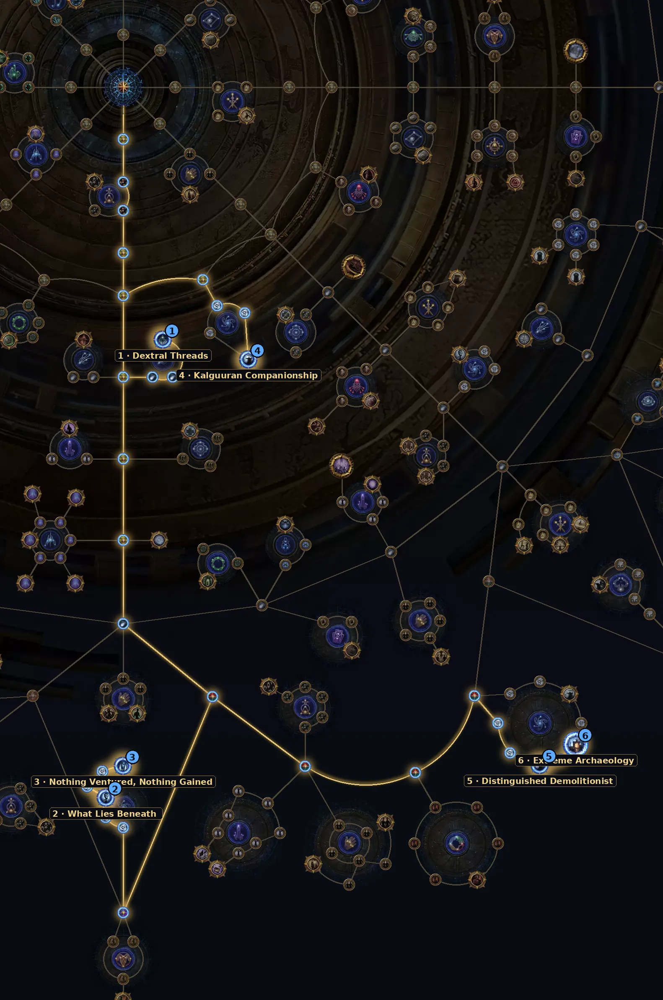

Explosivos que detonam remanescentes e baús enterrados. Rende artefatos para trocar com os NPCs da Expedition, e a Gwennen ganhou um serviço novo de craft na 3.30.
| Item | Como usar |
|---|---|
| Threads | Expedition Threads; mais Threads trazem efeitos especiais. |
| Tormented Spirits | Os que nascem perto da Expedition viram lápides que soltam mais spirits ao detonar. |
| Logbooks | Expedições grandes com mais remanescentes e um boss. |
| Removido | O remanescente de quantidade de itens não existe mais. |
Árvore oficial da 3.30 (a GGG publicou antes da liga). Caminho a partir do centro: 30 pontos para os essenciais e +2 para os extras. A árvore tem 150 pontos no total. Some com a base de sustento (36 pontos).
| Nó | O que faz |
|---|---|
| 1 Dextral Threads Essencial | Escolha a Thread da sua mecânica (Ritual, Ultimatum, Expedition ou Breach): +200% de chance de cair desse tipo. |
| 2 What Lies Beneath Essencial | +60% Logbooks dos Runic Monsters. |
| 3 Nothing Ventured, Nothing Gained Essencial | Logbooks com 4 implícitos e monstros mais ricos a cada remanescente detonado. |
| 4 Kalguuran Companionship Essencial | Escolha o líder: Rog, Gwennen ou Tujen (+150%) ou Dannig (+75%). Tujen é o padrão para currency. |
| 5 Distinguished Demolitionist Essencial | +50% de explosivos: alcança mais remanescentes e baús. |
| 6 Extreme Archaeology Extra | Keystone: 1 explosivo só, mas com +200% de raio e +100% de alcance. |
Abrir no site oficial (árvore do Atlas)
Nós de escolha (Thread, exército, líder etc.) aparecem marcados no link; escolha a opção indicada na tabela ao clicar neles.

DoT e minions funcionam bem: você detona e eles limpam sem precisar mirar.
Do site: Trickster ED + Contagion, Absolution Necromancer, Poison SRS.
Ainda não há vídeo de farm desta mecânica na 3.30.
Ver vídeos da 3.30 no YouTube
Busca pronta pela 3.30. A árvore do Atlas saiu antes da liga; os vídeos de farm da 3.30 começam a aparecer a partir do lançamento (13/11).